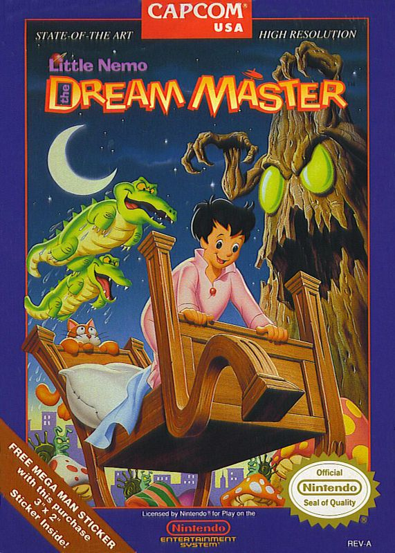

Video Game Review

Little Nemo: The Dream Master
NES
Little Nemo: Dream Master, developed by Capcom and released in 1990 for the Nintendo Entertainment System
(NES), is a 2D platformer game based on the classic comic strip and animated film, Little Nemo: Adventures
in Slumberland. The game offers a unique and imaginative gameplay experience, featuring charming visuals,
catchy music, and innovative mechanics. In this review, I will discuss various aspects of the game,
including the story, gameplay, graphics, and sound.
Story
In Little Nemo: Dream Master, players take on the role of Nemo, a young boy who embarks on an adventure
through his dreams to rescue the King of Slumberland from the evil Nightmare King. The game's narrative,
while simple, is filled with whimsy and wonder, providing a captivating backdrop for Nemo's dreamy
escapades.
Gameplay
Little Nemo: Dream Master features side-scrolling platforming gameplay with a unique twist. Instead of
relying solely on jumping and attacking, players must also befriend various creatures in the dream world by
feeding them candy. Once befriended, Nemo can ride or merge with these creatures, gaining their abilities to
help him navigate the environment and overcome obstacles.
The game's levels are filled with puzzles and challenges that require clever use of these creature
abilities, encouraging players to think strategically and experiment with different combinations. The
innovative mechanics, combined with tight controls, make for an engaging and satisfying gameplay experience.
Little Nemo: Dream Master also offers a reasonable challenge, with its difficulty ramping up as players
progress through the game. The level design is intricate and full of secrets, rewarding exploration and
perseverance.
Graphics
Little Nemo: Dream Master showcases charming and colorful visuals that bring the world of Slumberland to
life. The game's sprite work and animations are detailed and expressive, capturing the whimsical nature of
the source material. The various dreamscapes Nemo traverses are imaginative and diverse, ranging from lush
forests to underwater kingdoms, providing a visually stimulating experience throughout.
Sound
The game features an upbeat and memorable soundtrack composed by Junko Tamiya, which perfectly complements
the game's dreamy atmosphere. The catchy tunes and fitting sound effects contribute to the overall immersion
and charm of Little Nemo: Dream Master, making it a standout title in the NES library.
Conclusion
Little Nemo: Dream Master is a delightful and imaginative 2D platformer that offers a unique gameplay
experience on the NES. With its charming visuals, innovative mechanics, and memorable soundtrack, the game
provides a captivating journey through the world of Slumberland. While it may not be as well-known as some
of its contemporaries, Little Nemo: Dream Master is a hidden gem worth discovering for fans of classic
platformers and those seeking a nostalgic trip back to the golden age of gaming.
Did you enjoy my review of this video game? Check out one of my favorite game reviews below or see a
list of my reviews!
More importantly, I'm always looking for new music to enjoy. Let
me know what you're currently listening to!
My Favorites
Read why these albums are my all-time favorites!